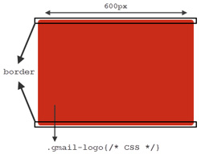
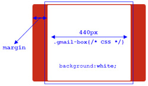
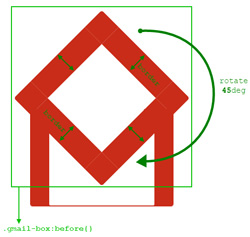
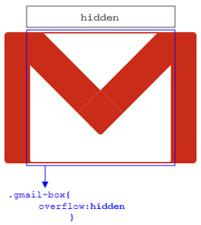
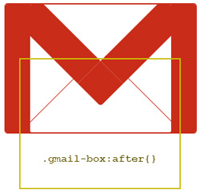

Created by Kamil Bystroń / @kbystron on GITHUB.COM
Kod Css:
.gmail-logo {
margin:110px auto;
background:rgb(201, 44, 25);
width:600px;
height:400px;
border-top:4px solid rgb(201, 44, 25);
border-bottom:4px solid rgb(201, 44, 25);
border-radius:10px;
-moz-border-radius:10px;
-webkit-border-radius:10px;
}

Kod Css:
.gmail-logo .gmail-box {
overflow:hidden;
float:left;
width:440px;
height:400px;
margin:0 0 0 80px;
background:white;
border-radius:5px;
-moz-border-radius:5px;
-webkit-border-radius:5px;
}

Kod Css:
.gmail-logo .gmail-box:before {
position:relative;
content:'';
z-index:1;
background:white;
float:left;
width:320px;
height:320px;
border:100px solid rgb(201, 44, 25);
margin:-310px 0 0 -40px;
border-radius:10px;
-moz-border-radius:10px;
-webkit-border-radius:10px;
-moz-transform:rotate(45deg);
-webkit-transform:rotate(45deg);
-o-transform:rotate(45deg);
}

Kod Css:
.gmail-logo .gmail-box {
overflow:hidden;
}

Kod Css:
.gmail-logo .gmail-box:after {
content:'';
float:left;
width:360px;
height:360px;
border:2px solid rgb(201, 44, 25);
margin:10px 0 0 40px;
-o-transform:rotate(45deg);
-webkit-transform:rotate(45deg);
-moz-transform:rotate(45deg);
}

Kod Css:
.gmail-logo:after {
content:'';
position:relative;
z-index:2;
content:'';
float:left;
margin-top:-404px;
width:600px;
height:408px;
display:block;
background:
-moz-linear-gradient(top, rgba(255, 255, 255, 0.3) 0%,
/* rgba(255, 255, 255, 0.3) 30%, */
rgba(255, 255, 255, 0.1) 100%);
background:-o-linear-gradient(top, rgba(255, 255, 255, 0.3) 0%,
/* rgba(255, 255, 255, 0.2) 30%, */
rgba(255, 255, 255, 0.1) 100%);
background:-webkit-gradient(
linear, left top, left bottombottom, color-stop(0%,
rgba(255, 255, 255, 0.3)),
/* color-stop(30%, rgba(255, 255, 255, 0.2)), */
color-stop(100%, rgba(255, 255, 255, 0.1)));
}
Kod Css:
.gmail-logo:hover {
background:#313131;
border-color:#313131;
/* cursor:pointer; */
}
.gmail-logo:hover .gmail-box:before {
border-color:#313131;
}
.gmail-logo:hover .gmail-box:after {
border-color:#313131;
border-bottom-color:#fff;
border-right-color:#fff;
}